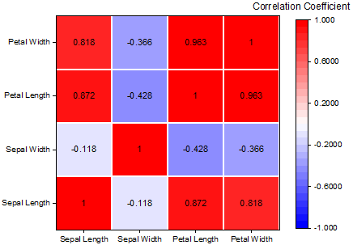
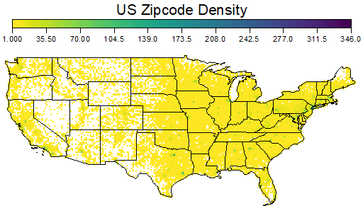
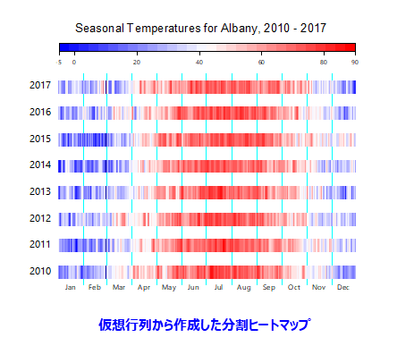

FAQ-187 ヒートマップを作成するにはどのようにしたら良いでしょうか？
create-heat-map
最終更新日：2023/1/4
Originは、XYデータ、XYZデータ、または行列データをヒートマップとして作図可能です。利用可能な組み込みテンプレートは、作図：等高線図メニューからのヒートマップ、ラベル付きヒートマップ、分割ヒートマップ、作図：3Dメニューからの3D積み上げヒートマップがあります。
ほかにも、ツール: テンプレートセンターからダウンロードできるTriangle HeatmapやHeatmap with Significant Markといったテンプレートも利用できます。
XY列またはXYZ列から作図する場合、XYデータに対して2Dビン化が実行され、各ビンのカウント、平均、最大などの統計量が計算され、Heatmapワークシートが作成されます。作成されたHeatmapシートに基づいてヒートマップがプロットされます。

軸目盛ラベルを調整
- ビンが多すぎる場合など、目盛ラベルが密集しすぎている場合は、軸をダブルクリックしてスケールタブに移動します。
- 主目盛のタイプを増分またはカウントに設定し、増分値やカウントの数を設定します。
ヒートマップにラベルを追加
- ヒートマップをクリックし、ミニツールバーボタンを使ってヒートマップのラベルを有効にします。
- 作図の詳細ダイアログを開きます。ラベルタブを開き、ラベルとして表示する項目を設定します。
- 
背景に地図を追加
XYが経度と緯度の場合、背景に地図を追加する方法がいくつかあります。
- 挿入メニューを開き、米国本土や世界地図といった組み込みの地図が利用可能かどうかを確認します。
- Map Onlineアプリで背景としてマップを挿入します。
- Google Map Importアプリで背景としてgoogleマップを挿入します。
- Shapefileコネクタを使ってシェープファイルをインポートし、シェープファイルを背景として描画します。
- グラフを等尺に設定するには、Alt + グラフ内をクリックし、等尺ミニツールバーボタンをクリックします。
- 
各ヒートマップセルで間隔をあける方法
- ヒートマップをクリックし、ヒートマップ間の間隔をオンにして、幅を調整します。
- 作図の詳細を開きます。表示タブの、X方向およびY方向のセル間の間隔を調整します。
- 作図：等高線図：分割ヒートマップでプロットした場合、自動的に水平方向の間隔が設定されます。
- 
追加リソース：
キーワード：ヒートマップ、等高線、仮想行列、分割ヒートマップ